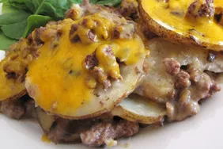

Hamburger Potato Casserole
Sourced from https://www.allrecipes.com/recipe/26609/hamburger-potato-casserole/

Description
This hamburger potato casserole is a recipe that my grandmother used to keep me and my finicky cousins well-fed! It is very kid-friendly, and adults like it too!
This quick and cheap hamburger potato casserole recipe will satisfy even the pickiest eaters at your table — and it’s made with basic ingredients you likely already have on hand.
Ingredients
- Beef: This comforting casserole starts with a pound of lean ground beef.
- Soup and milk: A can of condensed cream of mushroom soup and ¾ cup milk create a creamy texture.
- Vegetables: You’ll need ½ cup of onion and three thinly sliced potatoes.
- Seasonings: This hamburger and potato casserole is simply seasoned with salt and black pepper.
- Cheese: A cup of Cheddar cheese is the perfect finishing touch.
Steps
- Cook the beef and drain the grease.
- Mix the soup, milk, and seasonings.
- Layer the potatoes, soup mixture, and beef in the prepared baking dish.
- Bake until the potatoes are tender.
- Top with cheese and continue baking until the cheese is melted.
Return to homepage